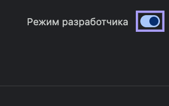
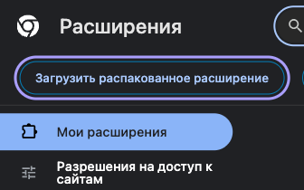
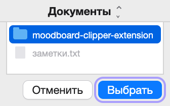
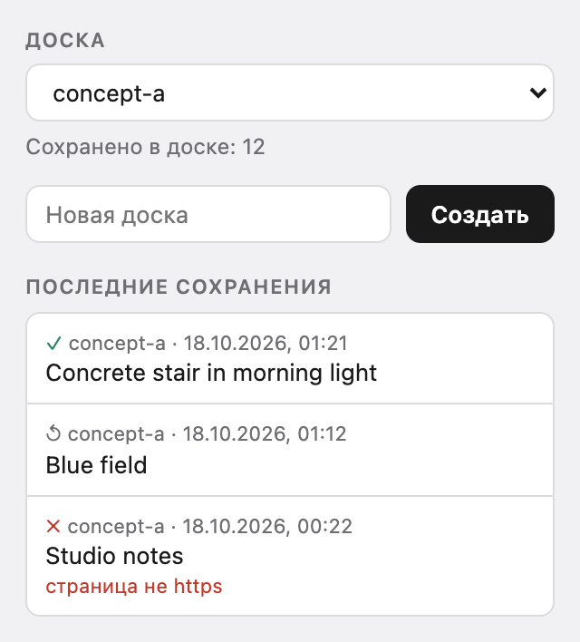

Установка
На Mac, Windows и Linux установка одинаковая.
Скачайте
moodboard-clipper-extension.zipи распакуйте: на Mac — двойным щелчком, в Windows — правый клик → «Извлечь все».Перенесите папку
moodboard-clipper-extensionтуда, где она будет жить, например в «Документы». Браузер загружает расширение из этой папки при каждом запуске, поэтому не удаляйте и не переименовывайте её.Откройте
chrome://extensions(Яндекс Браузер:browser://extensions) и включите «Режим разработчика». Адрес вставьте в адресную строку: по ссылке такие страницы не открываются.
Переключатель — в правом верхнем углу страницы расширений. Нажмите «Загрузить распакованное расширение».

Кнопка появляется, когда режим разработчика включён. Выберите папку
moodboard-clipper-extension.
Папка moodboard-clipper-extensionв «Документах».
Появится карточка Moodboard Clipper. Закрепите значок расширения на панели, чтобы выбирать доски.
У других браузеров на Chromium свой адрес страницы расширений: edge://extensions в Edge, brave://extensions в Brave. Linux, обновление и удаление — INSTALL.md (на английском).
Проверить скачанный файл: положите рядом SHA256SUMS.txt и выполните в этой папке shasum -a 256 -c SHA256SUMS.txt на Mac или sha256sum -c SHA256SUMS.txt в Linux. В Windows откройте PowerShell в папке с архивом (в Проводнике введите powershell в адресной строке и нажмите Enter) и выполните (Get-FileHash moodboard-clipper-extension.zip).Hash.ToLower(), затем сравните ответ со строкой архива в SHA256SUMS.txt.
Что умеет
＋ в Pinterest и Cosmos
Наведите курсор на картинку и нажмите ＋ в углу. Приходит оригинал, если сайт его отдаёт, а не превью из ленты. Когда картинка сохранится, ＋ сменится на ✓. Если она уже была в этой доске, второй раз она не скачается, а при наведении на ✓ появится подсказка «уже в доске».
Правый клик на любой странице
«В мудборд» есть в меню любой картинки, и расширение находит её, даже если сайт положил сверху ссылку. На Behance пункт стоит в меню страницы и берёт картинку под курсором.
Доска — это папка
Выберите или создайте доску в попапе расширения. Каждая доска — папка в Загрузки/moodboard-inbox или в папке, которую вы выберете через «Своя папка…» в попапе: откройте её в Finder или перетащите картинки прямо в Figma.
Карточка рядом с каждой картинкой
Небольшой JSON: страница, адрес картинки, автор, если страница его показывает, и время. Поля карточки (на английском).

Карточка вроде первого сохранения из попапа, сокращённо:
{
"schema": "moodboard-clip/1",
"board": "concept-a",
"site": "pinterest",
"page_url": "https://www.pinterest.com/pin/100000000000000001/",
"asset_url": "https://i.pinimg.com/originals/00/11/22/example.jpg",
"file": "20261018T100500Z-pinterest-100000000000000001.jpg",
"title": "Concrete stair in morning light",
"author": "unknown",
"saved_at": "2026-10-18T10:05:00Z"
}
Доски остаются на вашем компьютере
За расширением нет сервера, аккаунт заводить не нужно. Картинку оно скачивает так же, как скачал бы браузер, а список досок хранит в самом браузере. Зачем ему каждое разрешение:
downloads | Сохранить картинку и её карточку в папку доски. |
|---|---|
downloads.ui, alarms | Спрятать всплывающую панель загрузок, пока идёт сохранение, и вернуть её через минуту, если браузер усыпил расширение на полпути. |
storage | Доски, последние сохранения и проверка повторов. |
contextMenus | Пункт «В мудборд» в меню правого клика. |
activeTab, scripting | После правого клика найти картинку под ссылкой, которая лежит поверх неё, — только в этой вкладке и только в этот момент. |
| Pinterest, Cosmos, Behance | Кнопка ＋ в Pinterest и Cosmos. Пункт в меню страницы на Behance: небольшой скрипт на страницах Behance запоминает, какая картинка под курсором при каждом правом клике. Несколько коротких запросов к серверам картинок Pinterest и Cosmos, чтобы найти оригинальный размер. |
offscreen | Скрытая страница расширения, которая держит открытой вашу папку, чтобы туда можно было записывать сохранения. Она есть, только пока вы выбрали свою папку. |
| Все сайты (необязательно) | При установке не выдаётся. Спрашивается, только если вы нажмёте «Разрешить на всех сайтах»: это предлагается после сохранения в вашу папку с сайта, который не отдаёт картинку расширению. Используется только для загрузки сохраняемых вами картинок, без cookies. |
Что расширение хранит и какие запросы делает — в полном тексте (на английском).
Вопросы
Расширение есть в Chrome Web Store?
Пока нет. Браузер загружает расширение в режиме разработчика из папки, которую можно открыть, а весь его код лежит на GitHub.
Как обновить?
Новая версия ставится поверх старой. Распакуйте новый архив и положите папку на место прежней — с тем же именем и в то же место (Finder и Проводник предложат заменить). Затем нажмите стрелку обновления на карточке Moodboard Clipper и перезагрузите открытые вкладки Pinterest, Cosmos и Behance. Если загрузить папку из другого места, браузер поставит расширение заново, без списка досок, выбранной доски, счётчиков, последних сохранений и данных для проверки повторов; картинки в Загрузки/moodboard-inbox останутся. Расширение само обновления не проверяет: новые версии появляются на странице Releases.
Как удалить?
Нажмите «Удалить» на карточке Moodboard Clipper на странице расширений. Затем, если хотите, удалите папку расширения. Сохранённые картинки в Загрузки/moodboard-inbox останутся.
Можно ли использовать сохранённые картинки?
Сохранить картинку не значит получить право её использовать: она по-прежнему принадлежит автору. Прежде чем публиковать или продавать то, что из неё сделано, проверьте условия автора.